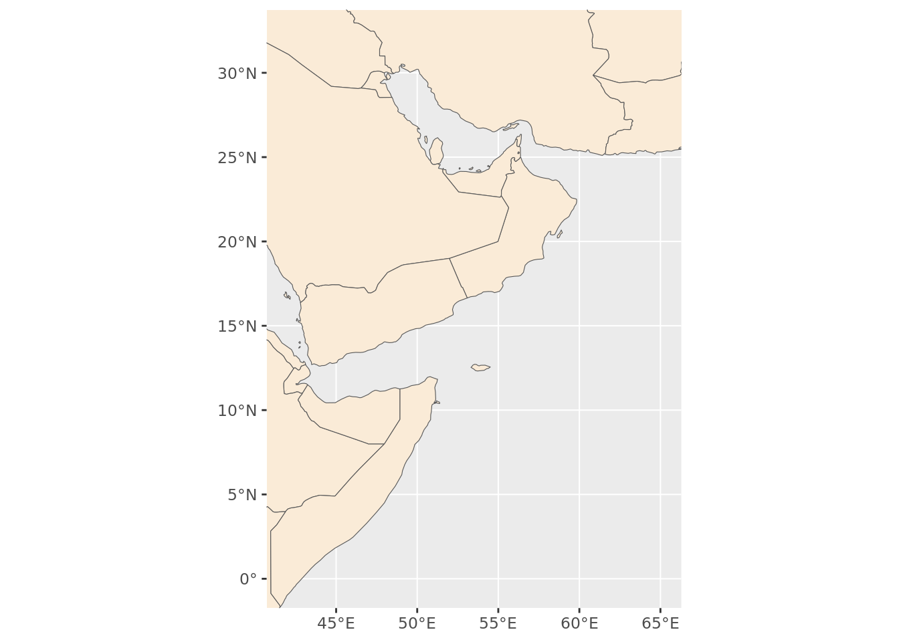
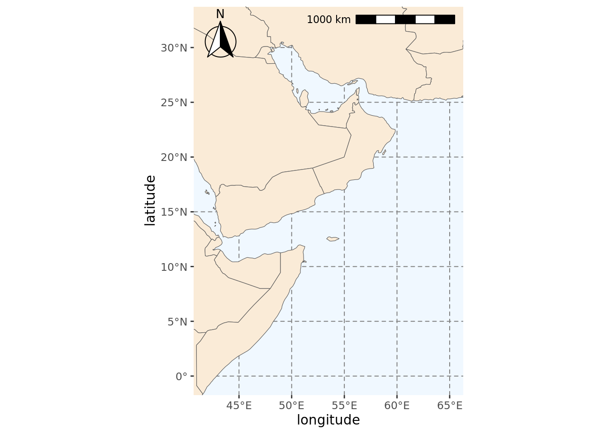
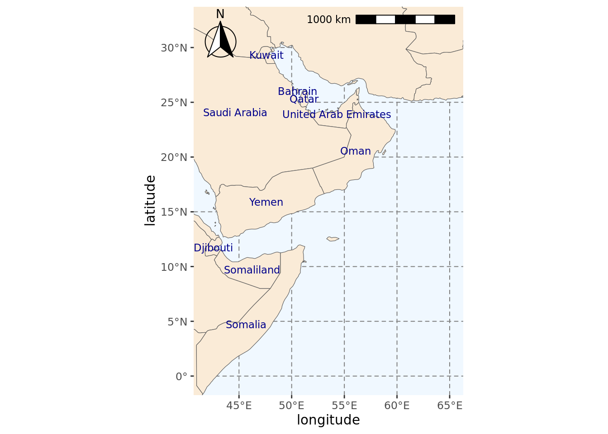

#Dealing with spatial data
library(sf)
#Getting base maps
library(rnaturalearth)
#Data manipulation and visualisation
library(tidyverse)
library(janitor)
library(ggspatial)Setting up the region
As a preliminary, we will define some shape files and plots of our region that we will use in later steps.
Load libraries
Create a bounding box
We will use a bounding box for the region of our interest (Arabian Sea and the Bay of Bengal) to extract C. caretta data relevant to our study area.
#We create a bounding box using minimum and maximum coordinate pairs
extent_polygon <- st_bbox(c(xmin = 41.875, xmax = 65.125,
ymax = -0.125, ymin = 32.125),
#Assign reference system
crs = st_crs(4326)) %>%
#Turn into sf object
st_as_sfc()
#Extract polygon geometry
pol_geometry <- st_as_text(extent_polygon[[1]])
#Saving bounding box for future use
fil <- here::here("data", "region", "BoundingBox.shp")
write_sf(extent_polygon, fil)Create a world map
We can create a world map to show where our study region is. ### Plotting region of interest This allows us to check our polygon of interest is located in the correct region.
#Getting base map
world <- ne_countries(scale = "medium", returnclass = "sf")
#Plotting map
world_box <- ggplot() +
#Adding base map
geom_sf(data = world) +
#Adding bounding box
geom_sf(data = extent_polygon, color = "red", fill = NA)+
#Setting theme of plots to not include a grey background
theme_bw()
fil <- here::here("data", "region", "world_box.rda")
save(world_box, file=fil)
world_box
Create a region map
First we create a base map of our region and save it.
base_region_map <- ggplot()+
#Adding base layer (world map)
geom_sf(data = world, fill = "antiquewhite")+
#Constraining map to original bounding box
lims(x = c(st_bbox(extent_polygon)$xmin, st_bbox(extent_polygon)$xmax),
y = c(st_bbox(extent_polygon)$ymin, st_bbox(extent_polygon)$ymax))
fil <- here::here("data", "region", "base_region_map.rda")
save(base_region_map, file=fil)
base_region_map
We will add some more features to our map: colors, scale and compass.
region_map <- base_region_map +
#Add scale bar on the top right of the plot
annotation_scale(location = "tr", width_hint = 0.5)+
#Add north arrow on the top left of plot
annotation_north_arrow(location = "tl", which_north = "true",
#Include small buffer from plot edge
pad_x = unit(0.01, "in"), pad_y = unit(0.05, "in"),
#Set style of north arrow
style = north_arrow_fancy_orienteering) +
#Changing color, type and size of grid lines
theme(panel.grid.major = element_line(color = gray(.5), linetype = "dashed", size = 0.5),
#Change background of map
panel.background = element_rect(fill = "aliceblue")) +
labs(x = "longitude", y = "latitude")Warning: The `size` argument of `element_line()` is deprecated as of ggplot2 3.4.0.
ℹ Please use the `linewidth` argument instead.fil <- here::here("data", "region", "region_map.rda")
save(region_map, file=fil)
region_mapScale on map varies by more than 10%, scale bar may be inaccurate
We add some labels for the countries.
#Extracting labels for countries in base map
world_points <- world %>%
st_make_valid(world) %>%
#Getting centroids for all polygons in the world base map
st_centroid(geometry) %>%
#Getting coordinates for each centroid
st_coordinates() %>%
#Adding centroids to original base map
bind_cols(world)
#Do not use spherical geometry
sf_use_s2(FALSE)
#Adding labels to map
region_map_label <- region_map +
geom_text(data = world_points,
#Point to coordinates and column with country names
aes(x = X, y = Y, label = name),
#Changing color and size of labels
color = "darkblue", size = 3,
#Avoid label overlap
check_overlap = TRUE)
fil <- here::here("data", "region", "region_map_label.rda")
save(region_map_label, file=fil)
#Checking final map
region_map_label